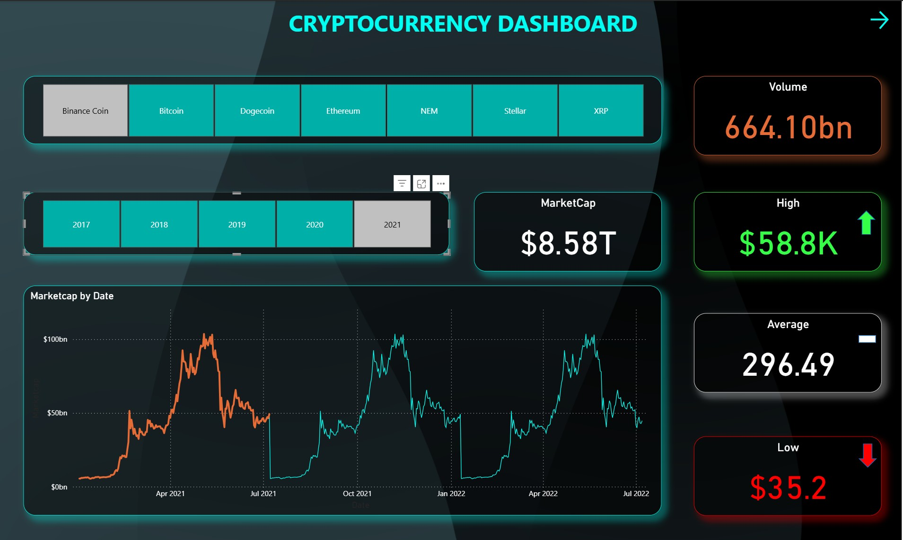
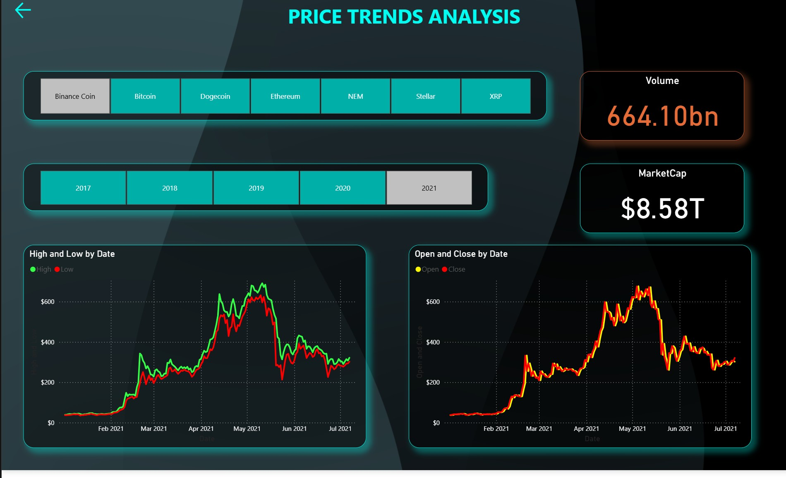

Cryptocurrency Market Analytics Dashboard
A live Power BI dashboard that aggregates and visualizes real-time and historical cryptocurrency market data for comprehensive financial analysis.
Power BI · Python · APIs · Data Automation · DAX
Project Overview
The cryptocurrency market is incredibly volatile and operates 24/7, making manual tracking across different exchanges and news sources nearly impossible. I built this automated dashboard to consolidate key market data into a single, unified view, allowing for efficient tracking of assets and analysis of historical trends to better understand market dynamics.
Key Features
- Live Market Data: Integrates with the CoinGecko API to display real-time prices, market capitalization, trading volume, and daily percentage changes for hundreds of cryptocurrencies.
- Historical Trend Analysis: Visualizes historical price and volume data, allowing users to analyze long-term trends, identify patterns, and understand coin performance over months or years.
- Automated Data Pipeline: A Python script runs on a schedule to automatically fetch, clean, and load the latest market data, ensuring the dashboard is always up-to-date without any manual effort.
- Interactive Drill-Down: Users can select specific cryptocurrencies from a list or slicer to see detailed charts and metrics, comparing their performance against others or the market as a whole.
Data & Reporting Workflow
- A Python script connects to a public cryptocurrency REST API to fetch live and historical market data in JSON format.
- The script cleans and transforms the raw JSON data using the Pandas library into structured, tabular formats.
- This processed data is then loaded directly into the Power BI data model, serving as the dashboard's foundation.
- The Python script is automated to run periodically, ensuring the dataset remains fresh for timely analysis.
- Within Power BI, DAX is used to write measures for advanced metrics like moving averages, volatility calculations, and portfolio value.
Technical Architecture
- BI Platform: Power BI Desktop was used for building the entire report, data model, and visualizations.
- Data Automation & ETL: A Python script leveraging the `Requests` library for API calls and `Pandas` for data manipulation served as the primary ETL tool.
- Data Source: Live data was sourced from the public CoinGecko REST API.
- Analytical Language: DAX (Data Analysis Expressions) was used within Power BI for creating advanced time-intelligence functions and custom performance metrics.
- Visualization Engine: Utilized a combination of native Power BI visuals, including line charts for historical trends, cards for live KPIs, and slicers for coin selection.
Visual Highlights

A detailed view showing the historical price chart for Bitcoin, with volume data and key moving averages.

A sortable table displaying key metrics for the top 100 cryptocurrencies, allowing for easy comparison.
Full Tech Stack Used
- BI Platform: Power BI Desktop
- Languages: Python, DAX
- Python Libraries: Pandas, Requests
- Data Sources: REST APIs (CoinGecko)
- Core Concepts: Data Automation, API Integration, Financial Analysis
Learnings & Impact
This project was an excellent deep dive into API integration and data automation. I learned how to handle real-time data streams, manage API rate limits, and structure a Python-driven ETL process to feed a BI dashboard. It created a powerful, personal tool for navigating the crypto market, replacing the need to check multiple websites with a single, reliable dashboard. The experience solidified my skills in connecting live, external data sources to Power BI for dynamic and impactful reporting.